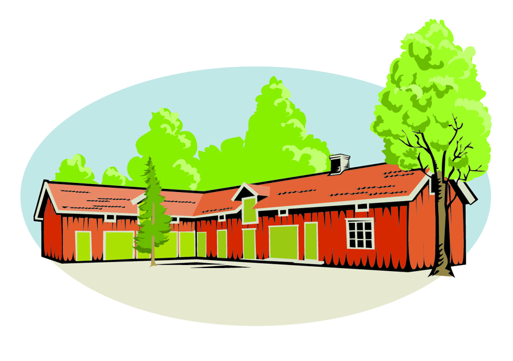

Senaste nytt
Konstrunda
Söndagen den 5:e maj öppnar Törebodas konstnärer sina ateljéer för besökare. Rundan starar på Visthuset och där finns karta och kaffebiljett att köpa.
Gammalt blir nytt!
Den 11 maj arrangeras Sveriges längsta loppis vid Göta Kanal. På Visthuset har vi loppis och antikt samt workshops hela dagen. Ta med dig något hemifrån som du vill göra om, eller hitta kanske något på loppisen som ger dig inspiration. Mer info...
Ung företagsamhet i Töreboda
Visthuset bjuder in till mässa med unga företagare i Töreboda. Kom och låt dig inspireras av ungdomligt engagemang och intressanta föreläsare.

Kontaktuppgifter
Gilla oss på facebook!
Adress:
Kanalvägen 2
545 30 Töreboda
David Skagerstam
Telefon: 0709 22 71 92
Adrian Gustafson
Telefon: 0703 97 17 06